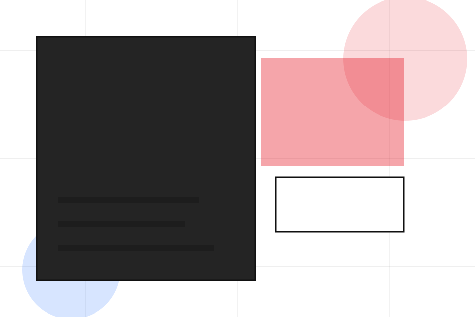
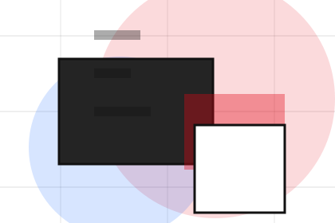
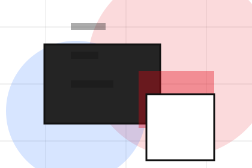
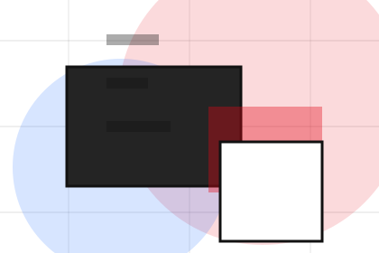
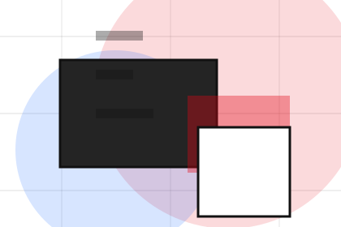
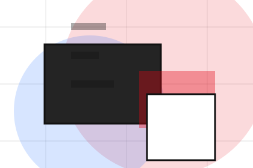
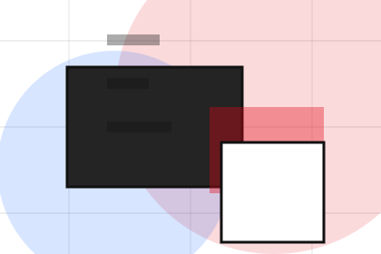
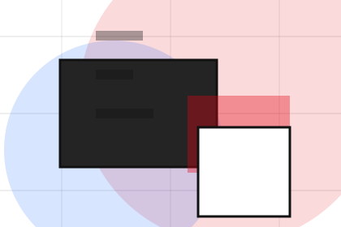
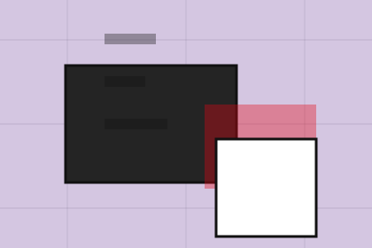

Fit
Who the offer is for, which scope it suits, and when a different route may be better.
Pricing / 01
Pricing opens as a clear creative decision hub: what Studio offers, who it helps, why it matters, and which route to take first.
The first screen combines positioning, proof, primary action, and fast internal navigation, so people can act immediately or compare the rest of the pricing route with context.
Typographic work hero
Select the closest route and Studio keeps the next step, proof, and follow-up expectation aligned with taste and production trust.

Pricing / 02
Identity makes commercial comparison easier by showing fit, scope, and terms before creative visitors ask for the next step.
The layout keeps price-sensitive decisions honest: it separates starting scope, fuller delivery, and ongoing support so the visitor can ask a sharper question.
Explore PricingWho the offer is for, which scope it suits, and when a different route may be better.
What is included clearly enough for creative, design & visual production visitors to compare value without hidden jargon.
The practical details that should be confirmed before someone asks to start the project.
Pricing / 03
Campaigns makes commercial comparison easier by showing fit, scope, and terms before creative visitors ask for the next step.
The layout keeps price-sensitive decisions honest: it separates starting scope, fuller delivery, and ongoing support so the visitor can ask a sharper question.
Explore PricingWho the offer is for, which scope it suits, and when a different route may be better.
What is included clearly enough for creative, design & visual production visitors to compare value without hidden jargon.
The practical details that should be confirmed before someone asks to start the project.
Pricing / 04
Retainers makes commercial comparison easier by showing fit, scope, and terms before creative visitors ask for the next step.
The layout keeps price-sensitive decisions honest: it separates starting scope, fuller delivery, and ongoing support so the visitor can ask a sharper question.
Explore Pricing

Who the offer is for, which scope it suits, and when a different route may be better.
Pricing / 05
Inclusions makes commercial comparison easier by showing fit, scope, and terms before creative visitors ask for the next step.
The layout keeps price-sensitive decisions honest: it separates starting scope, fuller delivery, and ongoing support so the visitor can ask a sharper question.
Explore PricingWho the offer is for, which scope it suits, and when a different route may be better.

What is included clearly enough for creative, design & visual production visitors to compare value without hidden jargon.

The practical details that should be confirmed before someone asks to start the project.
Pricing / 06
Revisions makes commercial comparison easier by showing fit, scope, and terms before creative visitors ask for the next step.
The layout keeps price-sensitive decisions honest: it separates starting scope, fuller delivery, and ongoing support so the visitor can ask a sharper question.
Explore PricingWho the offer is for, which scope it suits, and when a different route may be better.
What is included clearly enough for creative, design & visual production visitors to compare value without hidden jargon.

The practical details that should be confirmed before someone asks to start the project.
Pricing / 07
Usage makes commercial comparison easier by showing fit, scope, and terms before creative visitors ask for the next step.
The layout keeps price-sensitive decisions honest: it separates starting scope, fuller delivery, and ongoing support so the visitor can ask a sharper question.
Explore PricingWho the offer is for, which scope it suits, and when a different route may be better.
What is included clearly enough for creative, design & visual production visitors to compare value without hidden jargon.
The practical details that should be confirmed before someone asks to start the project.
Pricing / 08
Terms makes commercial comparison easier by showing fit, scope, and terms before creative visitors ask for the next step.
The layout keeps price-sensitive decisions honest: it separates starting scope, fuller delivery, and ongoing support so the visitor can ask a sharper question.
Explore PricingWho the offer is for, which scope it suits, and when a different route may be better.
What is included clearly enough for creative, design & visual production visitors to compare value without hidden jargon.
The practical details that should be confirmed before someone asks to start the project.
Pricing / 09
Quote converts customer proof into a useful buying signal: the problem, the experience, and what changed afterward.
Proof stays believable by focusing on situation, service experience, and practical change rather than vague praise or unsupported results.
Start Project
What the visitor needed before choosing Studio, written with enough context to feel real.
How the service, product, or support felt during the process, not just that it was good.

What became easier to decide, complete, buy, book, or trust after the interaction.
Pricing / 10
Studio closes the pricing route with a clear action, a quick reminder of the value, and a low-friction way to start the project.
Visitors who are ready can use the primary action. Visitors who are still comparing can scan the section links, proof, and support routes before they start the project.
Start ProjectThe final block keeps the choice simple: act now, compare one more proof route, or send enough detail for a focused response.
Start Projecttaste and production trust
A creative portfolio with identity-led project tiles, typographic scale, lightbox logic, and studio enquiry. Pricing ends with a direct path to start the project, plus enough context for visitors who still need to compare.

Start ProjectInformation is provided for planning and should be reviewed for the final client, location, and operating rules.